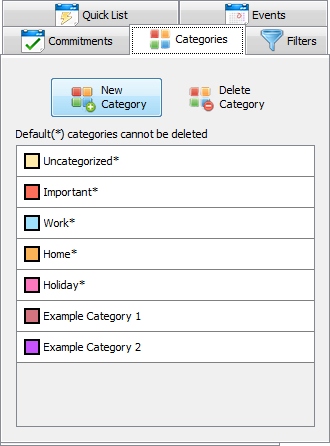
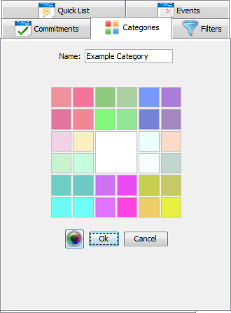
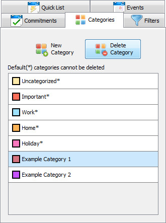
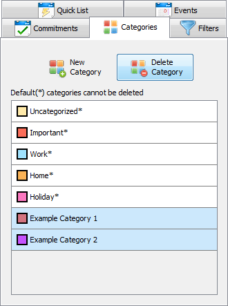

Categories can be used to sort events and commitments. Categories have a name and a color. Categories have their own list panel in Janeway which lists all of the categories. It also contains buttons which allow you to add or delete categories.
In order to add a category, first locate and select the category tab on the right.

Once selected, the panel will show two buttons and a list of categories. Click the button that says
New Category.

The new panel will change to show a text box for a category name and a color picker.
Enter a name and choose a color, and then click the OK button. The new category will
then be added to the category list.
To delete a category, first locate the category on the Category List Panel.
Click it once so that the category is highlighted.

Once the category is highlighted, locate the Delete Category button at the top
of the panel. Press this button to delete the category.
Multiple categories can be deleted at a time. To delete multiple categories,
first select all of the categories to be deleted. To select multiple categories,
hold the Ctrl/command key and click on the desired categories.

Once the categories are highlighted, locate the Delete Category button. Press this button to delete the categories.